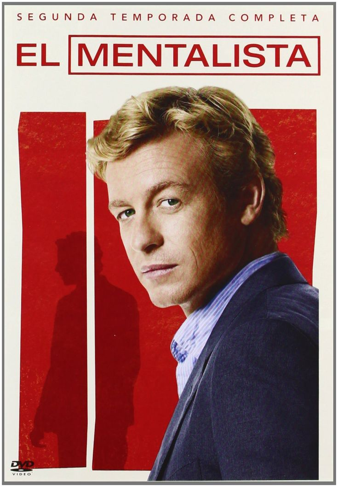

O Mentalista
1º Lugar no nosso ranking

Por que merece o 1º lugar?
Ocupa o 1º lugar porque a inteligência e o carisma do protagonista resolvem os casos de forma brilhante, prendendo a atenção do início ao fim. Diferente de outras séries policiais focadas apenas em evidências forenses, aqui o diferencial é a psicologia humana e a leitura comportamental.